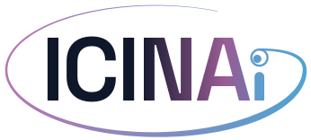

01
Can we build a lie detector for AI?
Develop rigorous white-box methods to detect deception, hidden goals, censorship, hallucination, reward hacking, and failures missed by ordinary evaluation.
Auditing AI
ICINAi · International Consortium for Interpretable AI
ICINAi brings researchers and industry together to build evidence-based methods, shared infrastructure, and a scientific commons for interpretable AI.
As AI capabilities rise, human agency must grow.
Today’s neural networks are trained, not programmed. Their internal mechanisms emerge from data, leaving society with the challenge of reverse-engineering the learned programs that underlie their behavior.
We focus the field on concrete goals that connect understanding with public responsibility.
Develop rigorous white-box methods to detect deception, hidden goals, censorship, hallucination, reward hacking, and failures missed by ordinary evaluation.
Auditing AIUse fully observable silicon brains to investigate concepts, abstraction, belief, planning, learning, agency, and the causal structure of reasoning.
Understanding intelligenceTranslate discoveries at the edge of machine knowledge into human insight, better judgment, and more capable human–AI collaboration.
Empowering peopleICINAi will convene researchers, support talent, and build open scientific infrastructure across institutions and sectors.
Fellowships, visiting researchers, and protected service rotations that bring people together across institutions.
Measurement, Models, Methods, Metrics, and Machines: the five foundations of reproducible interpretability research.
Research gatherings and public technical discussions centered on human teaching, learning, and scientific consensus.
We are assembling the initial group of academic and industry members who will shape ICINAi’s research programs, infrastructure, and standards.
Discuss participation